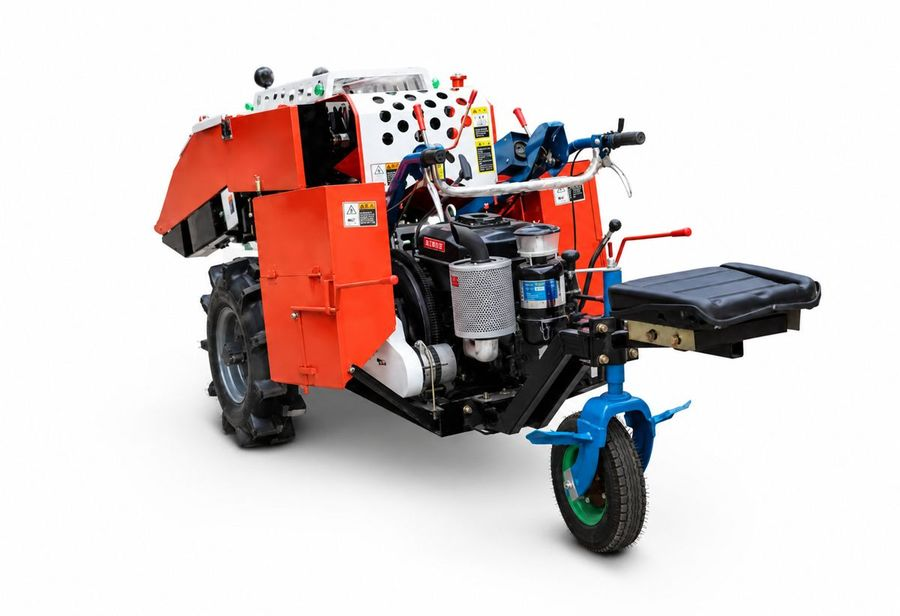

Récolte et battage
Récolteuse de maïs 25 ch
Diesel · 25 ch
Récolteuse automotrice à un rang, avec siège. Elle cueille les épis sur pied et les débarrasse de leurs feuilles en un seul passage.
- Puissance
- 25 ch
- Rendement
- 0,05 à 0,12 ha/h ind.
- Rangs
- 1 ind.
Fiche technique
| Puissance | 25 ch |
|---|---|
| Moteur | Diesel monocylindre |
| Conduite | Siège conducteur, guidon et leviers |
| Roues | 2 roues motrices à crampons, 1 roue avant directrice |
| Rangs récoltés | 1 ind. |
| Largeur de travail | Environ 650 mm ind. |
| Rendement | 0,05 à 0,12 ha/h ind. |
| Garde au sol | Environ 200 mm ind. |
| Régime moteur | Environ 2 200 tr/min ind. |
- Récolte plus rapide et moins pénible qu'à la main.
- L'opérateur travaille assis, ce qui permet de longues journées.
- Le format compact passe bien dans les petites parcelles.